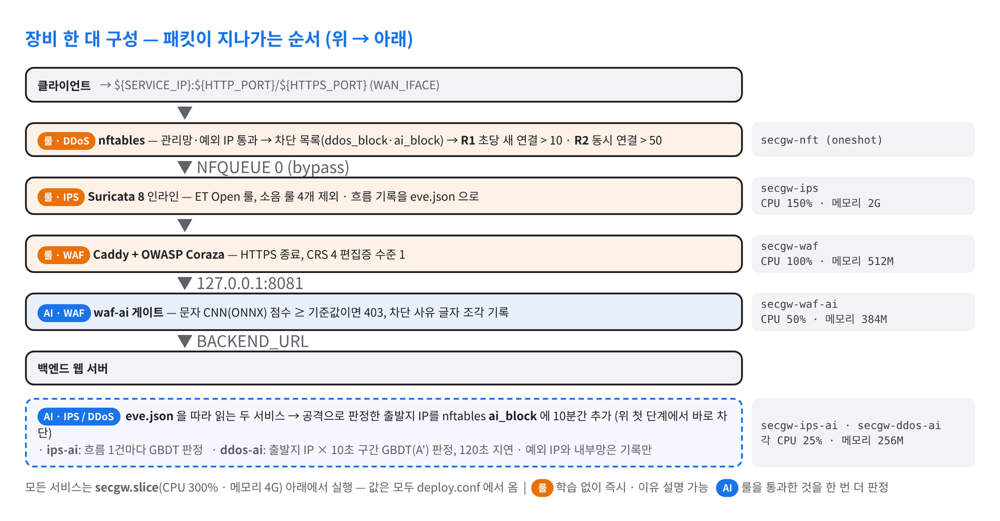
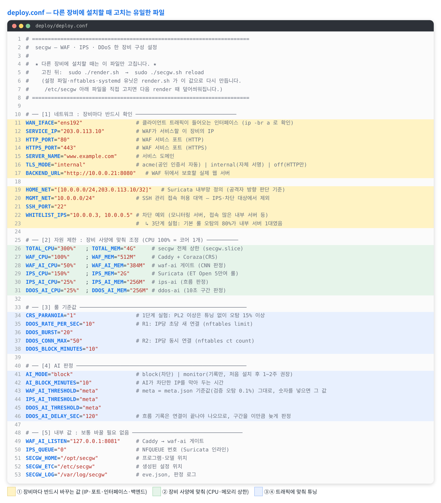
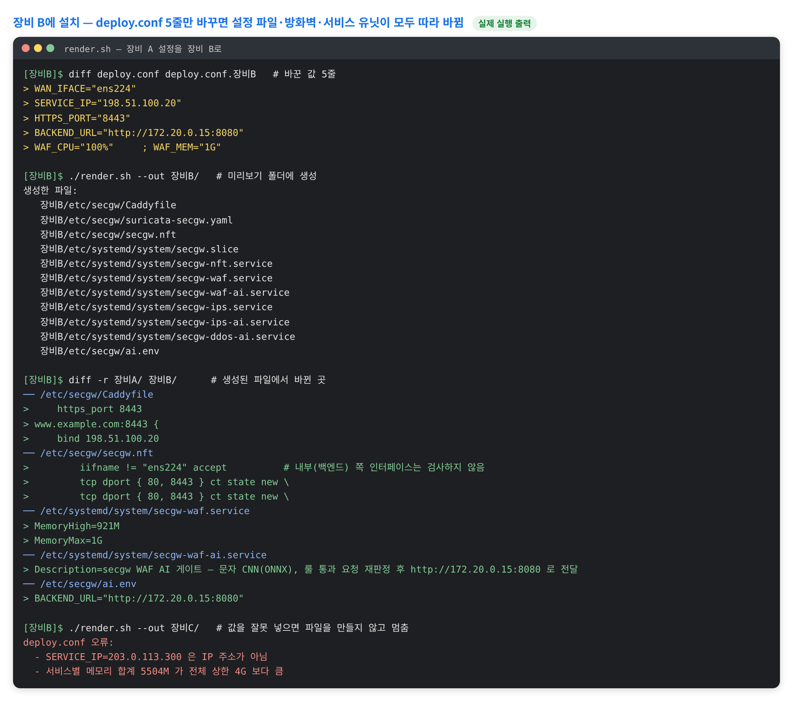
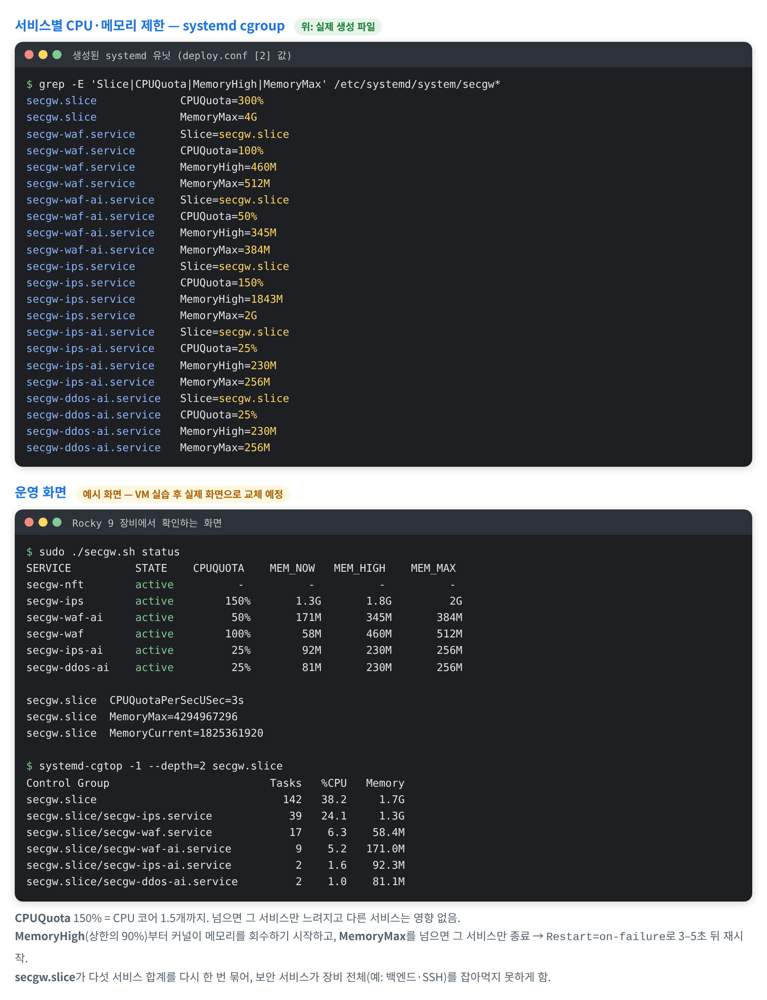
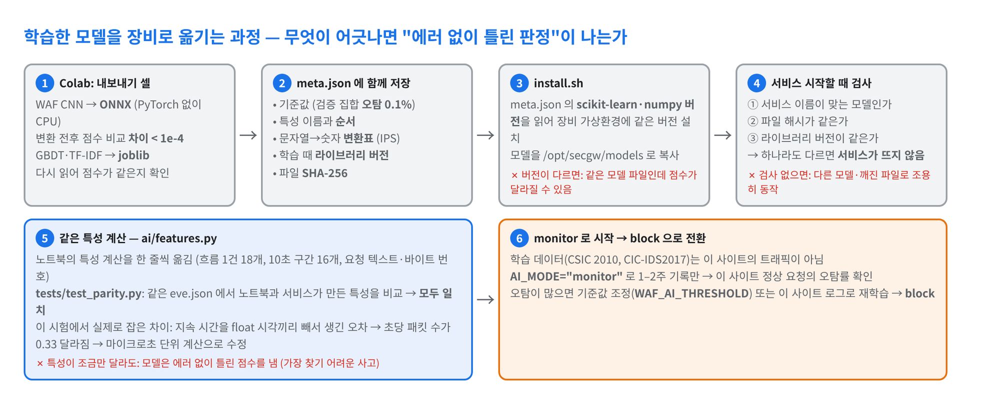
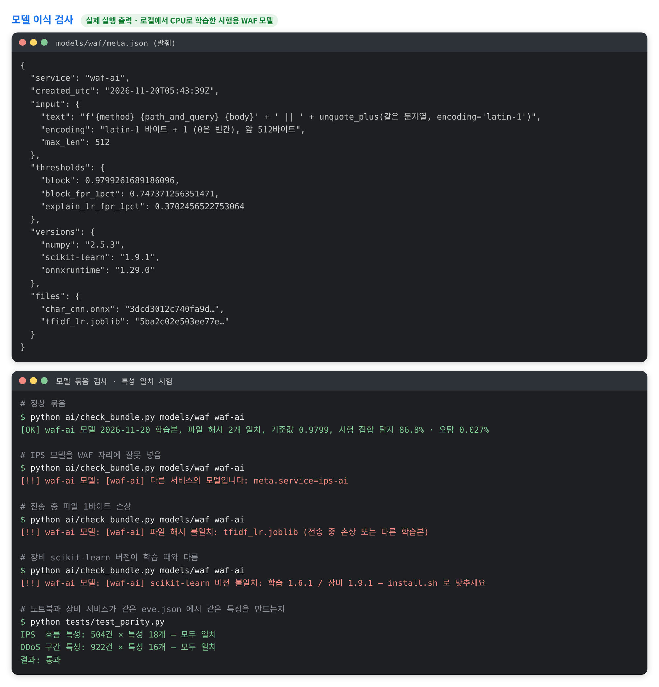
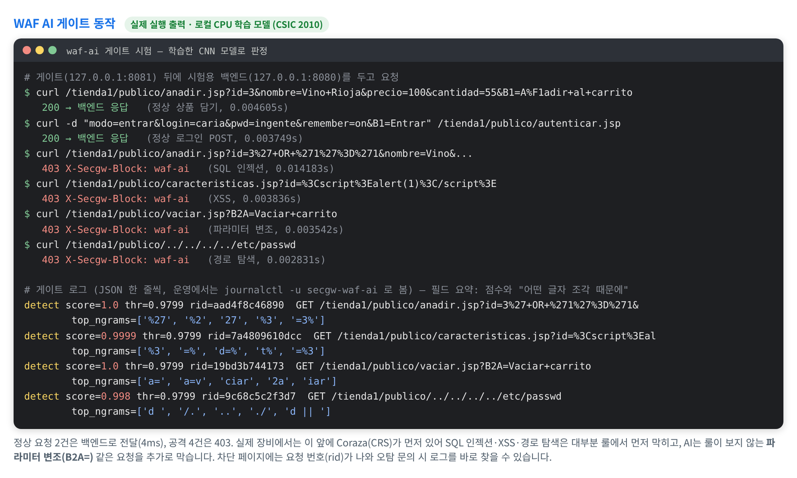
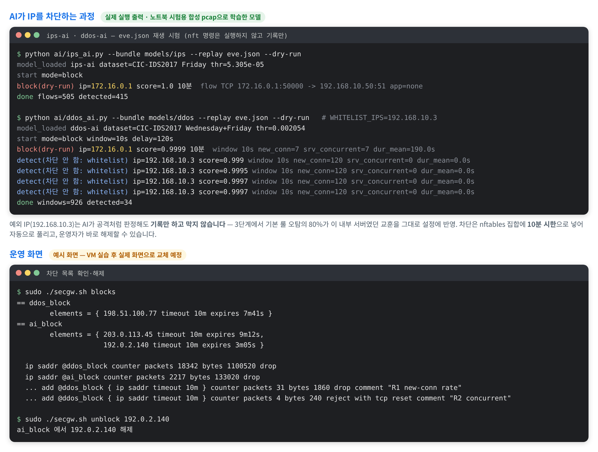

개인 프로젝트 · 룰 기반 vs AI 탐지 비교 4단계
실서비스 구성 — WAF · IPS · DDoS 한 장비 + 학습 모델 이식
개인 프로젝트구성·코드·검증 완료Rocky 9 VM 실습 예정
1–3단계는 "어느 쪽이 더 잘 잡는가"를 Colab에서 비교했습니다. 4단계는 그 결과를 실제 서비스 장비 한 대에 올리는 구성입니다. 룰 엔진 세 개와 AI 서비스 세 개를 서비스별 CPU·메모리 상한을 걸어 함께 돌리고, 다른 장비에 설치할 때는 설정 파일 하나(deploy.conf)만 고치면 되도록 만들었습니다. 특히 Colab에서 학습한 모델을 장비로 옮길 때 생기는 문제를 하나씩 막는 과정을 정리했습니다.
코드: github.com/hwang-taeun/security-ai-lab/deploy
화면 이미지 중 "실제 실행 출력" 표시는 제 작업 환경에서 실제로 실행한 결과이고, "예시 화면" 표시는 Rocky 9 장비에서 나올 화면을 같은 형식으로 만든 것입니다. VM 실습 후 실제 화면으로 바꿀 예정입니다.
1. 구성 — 패킷이 지나가는 순서

| 층 | 무엇으로 | 근거가 된 실험 결과 |
|---|---|---|
| DDoS 룰 | nftables — IP당 초당 새 연결(R1), 동시 연결(R2), 차단 목록 10분 시한 | 3단계: 느린 공격(slowloris)은 동시 연결 룰로만 잡힘 → 두 룰 모두 사용. 오탐 80%가 내부 서버 1대 → 예외 IP 목록 |
| IPS 룰 | Suricata 8 인라인(NFQUEUE, Suricata가 죽어도 통과) + ET Open | 2단계: 경보 141만 건 중 99.9%가 체크섬 등 패킷 품질 경보 → 소음 룰 4개를 처음부터 끔 |
| WAF 룰 | Caddy + OWASP Coraza, CRS 편집증 수준 1 | 1단계: PL2 이상은 튜닝 없이 오탐 15% 이상 |
| WAF AI | 룰을 통과한 요청을 문자 CNN으로 재판정하는 게이트 | 1단계: 룰이 보지 않는 "사이트 전용 비정상 값"을 AI가 잡음 |
| IPS·DDoS AI | Suricata 흐름 기록을 읽어 판정 → nftables 차단 목록에 추가 | 2·3단계: 룰과 AI가 서로 다른 것을 잡는 보완 관계 |
HTTPS 내용은 Caddy가 복호화한 뒤에야 보이므로, HTTP 공격은 WAF(룰+AI)가, 연결·프로토콜 수준 공격은 IPS와 DDoS 층이 맡도록 나눴습니다.
2. 다른 장비에 설치할 때: deploy.conf 한 파일만

Caddyfile, Suricata 설정, nftables 규칙, systemd 유닛 7개를 사람이 따로 고치면 한 곳만 빠뜨려도 서비스가 어긋납니다. 그래서 이 파일들은 템플릿으로 두고, render.sh가 deploy.conf 값을 채워 만들어 내게 했습니다. 만들기 전에 IP 형식, 숫자 범위, 서비스별 메모리 합계가 전체 상한을 넘는지까지 검사합니다.

| deploy.conf 값 | 반영되는 곳 |
|---|---|
SERVICE_IP, HTTP_PORT, HTTPS_PORT, SERVER_NAME, TLS_MODE | Caddyfile (bind, 사이트 주소, 인증서 방식), nftables R1·R2 대상 포트 |
WAN_IFACE | nftables — 이 인터페이스로 들어온 트래픽만 검사 (내부 백엔드 쪽은 통과) |
BACKEND_URL | waf-ai 게이트가 정상 요청을 넘기는 주소 |
HOME_NET, MGMT_NET, WHITELIST_IPS | Suricata 내부망, SSH 허용 대역, 차단 예외 (AI도 예외 IP는 기록만) |
*_CPU, *_MEM | systemd 유닛의 CPUQuota, MemoryHigh(90%), MemoryMax |
DDOS_RATE_PER_SEC, DDOS_CONN_MAX, CRS_PARANOIA, AI_MODE … | nftables R1·R2, Coraza 편집증 수준, AI 차단/기록 모드 |
3. 서비스별 CPU·메모리 제한 — systemd cgroup

- 서비스마다 상한: Suricata가 룰 5만여 개를 올리며 메모리를 많이 써도 WAF·AI 서비스에는 영향이 없습니다. 상한을 넘으면 그 서비스만 재시작됩니다.
- 전체 상한(secgw.slice): 보안 서비스 합계가 장비 전체를 차지해 SSH 관리 접속까지 막히는 일을 막습니다.
- 권한 최소화: AI 서비스는 전용 계정으로 실행하고, nftables에 IP를 넣는 권한(
CAP_NET_ADMIN)만 줍니다. 파일 시스템은 읽기 전용(ProtectSystem=strict)입니다.
4. 학습한 모델을 장비로 옮기기
처음에는 "Colab에서 학습했으니 파일만 복사하면 된다"고 생각했지만, 실제로는 에러 없이 틀린 판정을 만드는 함정이 여러 곳에 있었습니다. 그래서 각 함정마다 막는 장치를 하나씩 넣었습니다.

| 함정 | 증상 | 막는 장치 |
|---|---|---|
| Colab 세션이 끝나면 모델이 사라짐 | 결과 zip에는 숫자만 있고 모델이 없음 | 노트북 마지막에 내보내기 셀 추가 → *_model_bundle.zip |
| 장비에 GPU·PyTorch가 없음 | CNN 모델을 그대로 못 씀 | ONNX로 바꿔 onnxruntime(CPU)으로 실행. 바꾼 뒤 점수 차이 < 1e-4 확인 |
| 기준값을 장비에서 다시 정함 | 포트폴리오에 적은 오탐률과 달라짐 | 검증 집합에서 정한 기준값을 meta.json에 담아 그대로 사용 |
| 문자열→숫자 번호가 바뀜 (IPS) | 학습 때 http=3이 장비에서 다른 번호 → 조용히 오판 | 변환표를 meta.json에 저장해 장비가 같은 번호를 씀 |
| scikit-learn 버전이 다름 | 같은 파일인데 점수가 달라질 수 있음 | install.sh가 meta.json의 버전을 읽어 그대로 설치, 시작할 때 다시 확인 |
| 다른 모델·깨진 파일 | WAF 자리에 IPS 모델, 전송 중 손상 | 서비스 이름·SHA-256 확인, 다르면 서비스가 뜨지 않음 |
| 특성 계산이 미세하게 다름 | 가장 찾기 어려움 — 숫자만 조금 다름 | 노트북 계산을 그대로 옮기고 특성 일치 시험으로 비교 |

특성 일치 시험은 실제로 버그 하나를 잡았습니다. 연결 지속 시간을 "시작 시각(초) − 끝 시각(초)"처럼 소수점 시각끼리 빼서 계산했더니 아주 작은 오차가 생겼고, 이것이 "초당 패킷 수" 특성에서 0.33만큼 차이로 커졌습니다. 시각 차이를 마이크로초 단위로 직접 계산하도록 고친 뒤 18개 특성이 모두 일치했습니다. 모델 자체는 아무 에러도 내지 않았기 때문에, 이 시험이 없었다면 찾지 못했을 문제입니다.
처음에는 monitor로: 모델은 공개 데이터셋(CSIC 2010, CIC-IDS2017)으로 학습했고 이 사이트의 트래픽이 아닙니다. 그래서 AI_MODE="monitor"로 1–2주 동안 기록만 하며 실제 오탐률을 본 뒤 차단으로 바꾸는 것을 기본 절차로 두었습니다.
5. 동작 확인
WAF AI 게이트

차단할 때는 TF-IDF 모델로 어떤 글자 조각 때문에 막았는지 상위 5개를 함께 기록합니다. 1단계에서 "AI는 막은 이유가 남지 않는다"는 약점을 확인했기 때문에, 운영자가 오탐 문의를 받았을 때 요청 번호로 로그를 찾고 이유를 볼 수 있게 했습니다. 이 화면의 모델은 제 작업 환경에서 CPU로 3 epoch만 학습한 시험용입니다. Colab에서 내보낸 모델로 바꿔도 코드는 같습니다.
IPS·DDoS AI의 차단

6. 설치 순서 (Rocky Linux 9)
git clone https://github.com/hwang-taeun/security-ai-lab.git cd security-ai-lab/deploy vi deploy.conf # ① 네트워크 값부터 # models/ 에 Colab 에서 받은 waf·ips·ddos 묶음 풀기 (models/README.md) sudo ./install.sh # EPEL·Suricata 8·Caddy+Coraza 빌드·Python(학습과 같은 버전)·ET Open·서비스 sudo ./secgw.sh check # 설정 문법, 모델 해시·버전, 인터페이스·IP 확인 sudo ./secgw.sh status # 서비스 상태와 자원 사용량
제 작업 환경에서 실제로 확인한 것: render.sh 생성과 값 검사, nftables 규칙 문법(nft -c, NFQUEUE 줄 제외), Suricata 설정 검사(suricata -T), AI 서비스 3개의 실행과 차단 판단, 모델 묶음 검사, 특성 일치 시험. Caddy+Coraza 빌드와 systemd 자원 제한은 Rocky 9 VM에서 확인할 예정입니다.
7. 한계와 다음 단계
- ddos-ai는 즉시 대응용이 아닙니다. Suricata 흐름 기록은 연결이 끝나야 나와서 구간을 120초 늦게 판정합니다. 즉시 차단은 nftables R1·R2가 맡고, AI는 그 기준 아래로 들어오는 공격을 한 번 더 잡는 역할입니다.
- 모델은 공개 데이터셋으로 학습했습니다. 실제 사이트라면 monitor 기간에 모은 그 사이트 로그로 다시 학습해야 합니다.
- 장비 한 대 구성이라 그 장비가 멈추면 서비스도 멈춥니다. Suricata는 멈춰도 통과(bypass)하게 했지만, 이중화는 범위 밖입니다 (Pacemaker 웹 HA 프로젝트의 방식을 붙일 수 있음).
| 순서 | 할 일 |
|---|---|
| 1 | Colab에서 내보낸 실제 모델 묶음 3개로 교체 |
| 2 | Rocky 9 VM 2대(공격·방어)로 실습 → "예시 화면"을 실제 캡처로 교체, 공격 도구별 차단 로그 정리 |
| 3 | monitor 모드 기간의 정상 트래픽 오탐률 측정 |